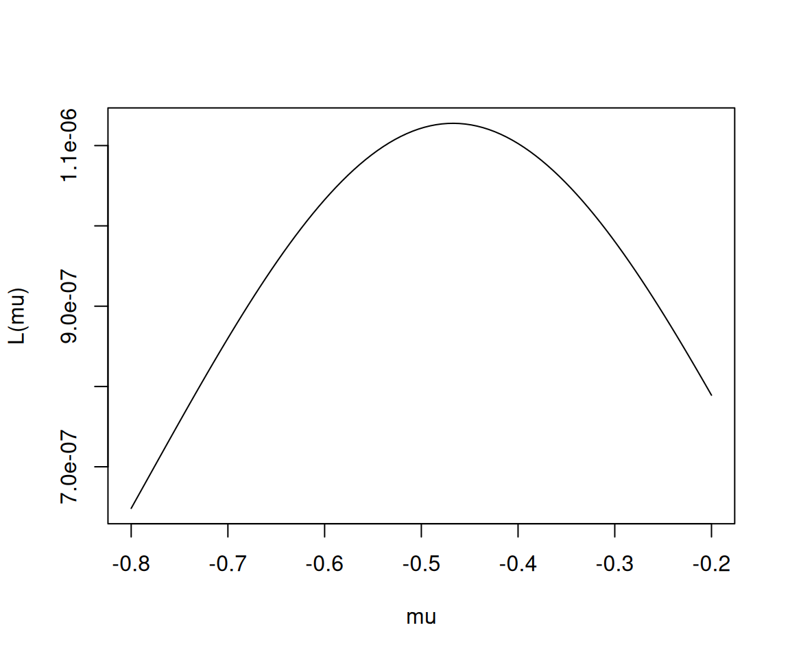

theta = 1:100/100
likelihood = (1-theta)^5 * theta^5
plot(theta,likelihood)
일견 그렇게 보일 수 있는 이유
하지만 이는 중요한 패러다임의 전환이다
단순히 “말장난”이 아니라, 통계적 추론을 위한 강력하고 범용적인 수학적 프레임워크를 제공한 것이 Fisher의 공헌이다.
# 예제1
앞면이 확률이 \(\theta\)인 동전을 10번 던져서 아래와 같이 나왔다고 하자.
이때 가능도함수는 아래와 같이 정의된다.
\[L(\theta|data) = \mathbb{P}(data|\theta)\]
따라서 가능도함수 \(L(\theta)=L(\theta|data)\)는 아래와 일반화 할 수 있다.
\[L(\theta) = (1-\theta)^5 \theta^5\]
몇개의 점에서 가능도함수값을 계산하면 아래와 같다.
| \(\theta\) | 0.1 | 0.2 | 0.3 | 0.4 | 0.5 | 0.6 | 0.7 | 0.8 | 0.9 |
|---|---|---|---|---|---|---|---|---|---|
| \(L(\theta)\) | 0.0001 | 0.0003 | 0.0010 | 0.0082 | 0.0098 | 0.0082 | 0.0010 | 0.0003 | 0.0001 |
더 많은 가능도함수 값을 조사하여 그림을 그려보자.
theta = 1:100/100
likelihood = (1-theta)^5 * theta^5
plot(theta,likelihood)
결론: 동전을 던져서 결과가 아래와 같이 나왔다면
동전을 던져서 앞면이 나올 확률은 \(\theta=0.5\)라고 추정할 수 있다. 왜냐하면 가능도함수 \(L(\theta)\)가 \(\theta\)에서 최대값을 가지니까. 따라서 이 문제의 경우 \(\theta\)에 대한 추정치는 \(\hat{\theta}=0.5\)라고 볼 수 있다.
#
# 정의 – 모수에 대한 추정치는 모수 그 자체 (흔히 \(\theta\)로 표기하는)와 구분짓기 위해서 \(\hat{\theta}\) 같은 기호로 사용한다. 즉
\[\hat{\theta} = 0.5 \Leftrightarrow \text{``$\theta=0.5$로 추정''}\]
이다.
# 예제2
앞면이 나올 확률이 \(\theta\)인 동전을 7번 던져서 아래와 같이 나왔다고 하자.
이 경우는 동전을 던져서 앞면이 나올 확률 \(\theta\)를 어떻게 추정하는게 맞을까?
(풀이)
theta = 1:100/100
likelihood = (1-theta)^3 * theta^4
plot(theta,likelihood)
최대값을 엄밀하게 조사하기 위해서 아래를 구해보자.
likelihood [1] 9.702990e-09 1.505907e-07 7.392651e-07 2.264924e-06 5.358594e-06
[6] 1.076437e-05 1.931261e-05 3.189506e-05 4.944179e-05 7.290000e-05
[11] 1.032145e-04 1.413100e-04 1.880750e-04 2.443473e-04 3.109008e-04
[16] 3.884345e-04 4.775622e-04 5.788041e-04 6.925792e-04 8.192000e-04
[21] 9.588672e-04 1.111667e-03 1.277567e-03 1.456417e-03 1.647949e-03
[26] 1.851776e-03 2.067396e-03 2.294191e-03 2.531436e-03 2.778300e-03
[31] 3.033850e-03 3.297058e-03 3.566812e-03 3.841913e-03 4.121091e-03
[36] 4.403013e-03 4.686283e-03 4.969463e-03 5.251072e-03 5.529600e-03
[41] 5.803520e-03 6.071292e-03 6.331380e-03 6.582256e-03 6.822415e-03
[46] 7.050381e-03 7.264723e-03 7.464058e-03 7.647066e-03 7.812500e-03
[51] 7.959191e-03 8.086062e-03 8.192134e-03 8.276535e-03 8.338507e-03
[56] 8.377417e-03 8.392760e-03 8.384166e-03 8.351406e-03 8.294400e-03
[61] 8.213214e-03 8.108071e-03 7.979347e-03 7.827578e-03 7.653455e-03
[66] 7.457830e-03 7.241708e-03 7.006249e-03 6.752762e-03 6.482700e-03
[71] 6.197655e-03 5.899349e-03 5.589626e-03 5.270441e-03 4.943848e-03
[76] 4.611987e-03 4.277070e-03 3.941363e-03 3.607167e-03 3.276800e-03
[81] 2.952575e-03 2.636774e-03 2.331627e-03 2.039281e-03 1.761771e-03
[86] 1.500990e-03 1.258656e-03 1.036274e-03 8.350992e-04 6.561000e-04
[91] 4.999115e-04 3.667932e-04 2.565818e-04 1.686418e-04 1.018133e-04
[96] 5.435818e-05 2.390291e-05 7.378945e-06 9.605960e-07 0.000000e+00max(likelihood) [1] 0.00839276which.max(likelihood)[1] 57likelihood는 여기에서 길이가 100인 벡터이고 (칸이 100개 있는 array), 100개의 값 중에서 최대값은 0.00839276이다. 그리고 최대값은 100칸중 57번째 칸에 위치하여 있다.
그런데 사실 likelihood는 아래와 같은 theta에 대응하여 구해진 숫자이다.
theta [1] 0.01 0.02 0.03 0.04 0.05 0.06 0.07 0.08 0.09 0.10 0.11 0.12 0.13 0.14 0.15
[16] 0.16 0.17 0.18 0.19 0.20 0.21 0.22 0.23 0.24 0.25 0.26 0.27 0.28 0.29 0.30
[31] 0.31 0.32 0.33 0.34 0.35 0.36 0.37 0.38 0.39 0.40 0.41 0.42 0.43 0.44 0.45
[46] 0.46 0.47 0.48 0.49 0.50 0.51 0.52 0.53 0.54 0.55 0.56 0.57 0.58 0.59 0.60
[61] 0.61 0.62 0.63 0.64 0.65 0.66 0.67 0.68 0.69 0.70 0.71 0.72 0.73 0.74 0.75
[76] 0.76 0.77 0.78 0.79 0.80 0.81 0.82 0.83 0.84 0.85 0.86 0.87 0.88 0.89 0.90
[91] 0.91 0.92 0.93 0.94 0.95 0.96 0.97 0.98 0.99 1.00따라서 theta=0.57에서 likelihood가 최대화된다고 볼 수 있다. 이 숫자는 우리가 가지는 직관적인 숫자
4/7[1] 0.5714286와 비슷하다.
#
# 예제3
정규분포에서 아래와 같은 데이터를 관측하였다고 하자.
set.seed(12)
x = rnorm(10)x [1] -1.4805676 1.5771695 -0.9567445 -0.9200052 -1.9976421 -0.2722960
[7] -0.3153487 -0.6282552 -0.1064639 0.4280148정규분포의 평균과 분산을 추정하라.
(풀이)
정규분포의 pdf는 아래와 같다.
\[f(x) = \frac{1}{\sigma\sqrt{2\pi}} e^{-\frac{(x-\mu)^2}{2\sigma^2}}\]
가능도함수는 아래와 같이 정의된다. \[L(\theta|data) = f(data|\theta)\]
여기에서 \(\theta = \mu,\sigma^2\) 이므로 가능도함수는 아래와 같이 된다.
\[L(\mu,\sigma^2|data) = f(data|\mu,\sigma^2)\]
\(data = (-1.4805676, \dots, 0.4280148)\) 에 대하여 정리하면 아래와 같다.
\[L(\mu,\sigma^2)=\frac{1}{\sigma\sqrt{2\pi}} e^{-\frac{(-1.4805676-\mu)^2}{2\sigma^2}}\times\dots\times\frac{1}{\sigma\sqrt{2\pi}} e^{-\frac{(0.4280148-\mu)^2}{2\sigma^2}}\]
\((\mu, \sigma^2)=(0,1)\)에 대한 가능도함수값은 아래와 같이 계산할 수 있다.
1/sqrt(2*pi) * exp(-x^2/2) [1] 0.13332324 0.11501758 0.25243070 0.26128504 0.05424603 0.38442326
[7] 0.37959099 0.32749226 0.39668776 0.36402349prod(1/sqrt(2*pi) * exp(-x^2/2))[1] 3.786165e-07몇개의 \(\mu\)와 몇개의 \(\sigma^2\) 에 대한 가능도값을 구하면 아래와 같다.
| \(\sigma^2=0.8\) | \(\sigma^2=0.9\) | \(\sigma^2=1.0\) | \(\sigma^2=1.1\) | \(\sigma^2=1.2\) | |
|---|---|---|---|---|---|
| \(\mu=-0.7\) | 8.0e-07 | 8.6e-07 | 8.6e-07 | 8.2e-07 | 7.7e-07 |
| \(\mu=-0.6\) | 1.0e-06 | 1.0e-06 | 1.0e-06 | 9.7e-07 | 8.9e-07 |
| \(\mu=-0.5\) | 1.1e-06 | 1.2e-06 | 1.1e-06 | 1.0e-06 | 9.6e-07 |
| \(\mu=-0.4\) | 1.1e-06 | 1.1e-06 | 1.1e-06 | 1.0e-06 | 9.4e-07 |
| \(\mu=-0.3\) | 9.4e-07 | 9.9e-07 | 9.8e-07 | 9.3e-07 | 8.5e-07 |
| \(\mu=-0.2\) | 7.1e-07 | 7.8e-07 | 7.9e-07 | 7.6e-07 | 7.1e-07 |
| \(\mu=-0.1\) | 4.8e-07 | 5.5e-07 | 5.7e-07 | 5.7e-07 | 5.5e-07 |
| \(\mu=0.0\) | 2.9e-07 | 3.4e-07 | 3.8e-07 | 3.9e-07 | 3.9e-07 |
| \(\mu=0.1\) | 1.5e-07 | 1.9e-07 | 2.3e-07 | 2.4e-07 | 2.5e-07 |
대략적으로 \(\sigma^2=0.9\) \(\mu=-0.5\) 근처에서 최대값을 가지는 듯 하다.
이를 그림으로 그려보자.

역시 표로 얻은 직관과 비슷하다. 따라서 \(\mu\)와 \(\sigma^2\)을 대략적으로 \(-0.5\), \(0.9\)로 추정하는 것이 바람직해보인다. 이는 우리의 직관과 대략적으로 일치한다.
mean(x)[1] -0.4672139sd(x) # 이게 약간 달라보이는 것은 기분탓일까?? [1] 1.000657# 예제4
분산이 1인 정규분포에서 아래와 같은 데이터를 관측하였다고 하자.
set.seed(12)
x = rnorm(10)x [1] -1.4805676 1.5771695 -0.9567445 -0.9200052 -1.9976421 -0.2722960
[7] -0.3153487 -0.6282552 -0.1064639 0.4280148정규분포의 평균을 추정하라.
(풀이)
정규분포의 pdf는 아래와 같다.
\[f(x) = \frac{1}{\sigma\sqrt{2\pi}} e^{-\frac{(x-\mu)^2}{2\sigma^2}}\]
가능도함수는 아래와 같이 정의된다.
\[L(\theta|data) = f(data|\theta)\]
여기에서 \(\theta\)는 정규분포의 모평균으로 생각해야 한다. (원래는 \(\theta=(\mu,\sigma^2)\)이고 \(L(\theta|data)\)는 원래 \(\mu\)와 \(\sigma\) 모두에 영향받는 함수이겠지만, 이 문제에서는 \(\sigma=1\)으로 고정되었으므로 \(L(\theta)\)역시 \(\mu\)에만 영향받는 함수가 된다.) 따라서 아래와 같이 쓸 수 있다.
\[L(\mu|data) = f(data|\mu)\]
정리하면 아래와 같다.
\[L(\mu)=\frac{1}{\sqrt{2\pi}} e^{-\frac{(-1.4805676-\mu)^2}{2}}\times\dots\times\frac{1}{\sqrt{2\pi}} e^{-\frac{(0.4280148-\mu)^2}{2}}\]
그래프를 그리면 아래와 같다.

대략적으로 \(\mu\)는 -0.4xx 와 같은 값으로 추정하면 맞을것 같다. 그리고 이는 우리의 직관과 일치한다.
mean(x)[1] -0.4672139